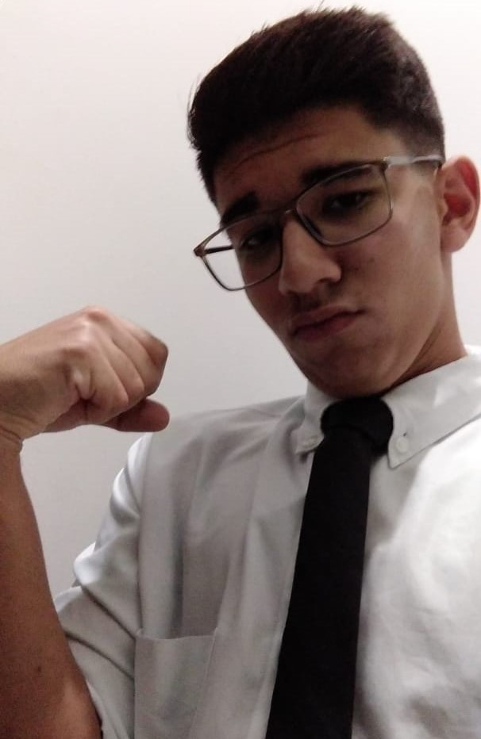

Um pouco de mim mesmo

Eu nasci em Campo Grande e moro aqui desde então e entrei para o IFMS em 2019, Como vocês já devem ter lido no rodapé de todos os sites, meu nome é Daniel Greffe Cardoso (com o adicional do último nome dessa vez), bom eu sou bem nerd como devem ter reparado ao ler o site gostando muito de super heróis em geral e principalmente The Legend of Zelda, tenho como Hobby praticar esportes como futebol, vôlei, tênis de mesa, entre outros. Outra coisa que gosto é o curso que escolhi, eu na verdade confundi os conteúdos porque achei que a informática abrangesse muito a parte física do computador, apesar de na época eu já gostar de mexer com programas, não fazia ideia de que o curso seria assim. E conforme o desenrolar do meu curso aprendi a gostar da programação e dos outros conteúdos.
Desenvolvedores
